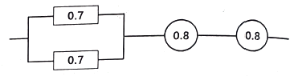
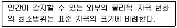
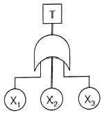
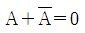
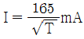
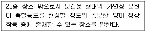
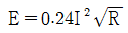
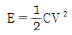
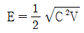
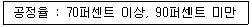

산업안전기사 (2021-03-07 기출문제)
1과목: 안전관리론
1. 참가자에게 일정한 역할을 주어 실제적으로 연기를 시켜봄으로써 자기의 역할을 보다 확실히 인식할 수 있도록 체험학습을 시키는 교육방법은?
- Symposium
- Brain Storming
- Role Playing
- Fish Bowl Playing
(정답률: 92%)

2. 일반적으로 시간의 변화에 따라 야간에 상승하는 생체리듬은?
- 혈압
- 맥박수
- 체중
- 혈액의 수분
(정답률: 80%)
3. 하인리히의 재해구성비율 “1:29:300”에서 “29”에 해당되는 사고발생비율은?
- 8.8%
- 9.8%
- 10.8%
- 11.8%
(정답률: 75%)
4. 무재해 운동의 3원칙에 해당되지 않는 것은?
- 무의 원칙
- 참가의 원칙
- 선취의 원칙
- 대책선정의 원칙
(정답률: 79%)
5. 안전보건관리조직의 형태 중 라인-스태프(Line-Staff)형에 관한 설명으로 틀린 것은?
- 조직원 전원을 자율적으로 안전 활동에 참여시킬 수 있다.
- 라인의 관리, 감독자에게도 안전에 관한 책임과 권한이 부여된다.
- 중규모 사업장(100명 이상 ~ 500명 미만)에 적합하다.
- 안전 활동과 생산업무가 유리될 우려가 없기 때문에 균형을 유지할 수 있어 이상적인 조직형태이다.
(정답률: 87%)
6. 브레인스토밍 기법에 관한 설명으로 옳은 것은?
- 타인의 의견을 수정하지 않는다.
- 지정된 표현방식에서 벗어나 자유롭게 의견을 제시한다.
- 참여자에게는 동일한 횟수의 의견제시 기회가 부여된다.
- 주제와 내용이 다르거나 잘못된 의견은 지적하여 조정한다.
(정답률: 82%)
7. 산업안전보건법령상 안전인증대상기계등에 포함되는 기계, 설비, 방호장치에 해당하지 않는 것은?
- 롤러기
- 크레인
- 동력식 수동대패용 칼날 접촉 방지장치
- 방폭구조(防爆構造) 전기기계·기구 및 부품
(정답률: 64%)
8. 안전교육 중 같은 것을 반복하여 개인의 시행착오에 의해서만 점차 그 사람에게 형성되는 것은?
- 안전기술의 교육
- 안전지식의 교육
- 안전기능의 교육
- 안전태도의 교육
(정답률: 67%)
9. 상황성 누발자의 재해 유발원인과 가장 거리가 먼 것은?
- 작업이 어렵기 때문이다.
- 심신에 근심이 있기 때문이다.
- 기계설비의 결함이 있기 때문이다.
- 도덕성이 결여되어 있기 때문이다.
(정답률: 83%)
10. 작업자 적성의 요인이 아닌 것은?
- 지능
- 인간성
- 흥미
- 연령
(정답률: 78%)
11. 재해로 인한 직접비용으로 8000만원의 산재보상비가 지급되었을 때, 하인리히 방식에 따른 총 손실비용은?
- 16000만원
- 24000만원
- 32000만원
- 40000만원
(정답률: 66%)
12. 재해조사의 목적과 가장 거리가 먼 것은?
- 재해예방 자료수집
- 재해관련 책임자 문책
- 동종 및 유사재해 재발방지
- 재해발생 원인 및 결함 규명
(정답률: 93%)
13. 교육훈련기법 중 Off.J.T(Off the Job Training)의 장점이 아닌 것은?
- 업무의 계속성이 유지된다.
- 외부의 전문가를 강사로 활용할 수 있다.
- 특별교재, 시설을 유효하게 사용할 수 있다.
- 다수의 대상자에게 조직적 훈련이 가능하다.
(정답률: 83%)
14. 산업안전보건법령상 중대재해의 범위에 해당하지 않는 것은?
- 1명의 사망자가 발생한 재해
- 1개월의 요양을 요하는 부상자가 동시에 5명 발생한 재해
- 3개월의 요양을 요하는 부상자가 동시에 3명 발생한 재해
- 10명의 직업성 질병자가 동시에 발생한 재해
(정답률: 72%)
15. Thorndike의 시행착오설에 의한 학습의 원칙이 아닌 것은?
- 연습의 원칙
- 효과의 원칙
- 동일성의 원칙
- 준비성의 원칙
(정답률: 53%)
16. 산업안전보건법령상 보안경 착용을 포함하는 안전보건표지의 종류는?
- 지시표지
- 안내표지
- 금지표지
- 경고표지
(정답률: 86%)
17. 보호구에 관한 설명으로 옳은 것은?
- 유해물질이 발생하는 산소결핍지역에서는 필히 방독마스크를 착용하여야 한다.
- 차광용보안경의 사용구분에 따른 종류에는 자외선용, 적외선용, 복합용, 용접용이 있다.
- 선반작업과 같이 손에 재해가 많이 발생하는 작업장에서는 장갑 착용을 의무화한다.
- 귀마개는 처음에는 저음만을 차단하는 제품부터 사용하며, 일정 기간이 지난 후 고음까지 모두 차단할 수 있는 제품을 사용한다.
(정답률: 75%)
18. 산업안전보건법령상 사업 내 안전보건교육의 교육시간에 관한 설명으로 옳은 것은?
- 일용근로자의 작업내용 변경 시의 교육은 2시간 이상이다.
- 사무직에 종사하는 근로자의 정기교육은 매분기 3시간 이상이다.
- 일용근로자를 제외한 근로자의 채용 시 교육은 4시간 이상이다.
- 관리감독자의 지위에 있는 사람의 정기교육은 연간 8시간 이상이다.
(정답률: 56%)
19. 집단에서의 인간관계 메커니즘(Mechanism)과 가장 거리가 먼 것은?
- 분열, 강박
- 모방, 암시
- 동일화, 일체화
- 커뮤니케이션, 공감
(정답률: 79%)
20. 재해의 빈도와 상해의 강약도를 혼합하여 집계하는 지표로 옳은 것은?
- 강도율
- 종합재해지수
- 안전활동율
- Safe-T-Score
(정답률: 83%)
2과목: 인간공학 및 시스템안전공학
21. 인체측정 자료를 장비, 설비 등의 설계에 적용하기 위한 응용원칙에 해당하지 않는 것은?
- 조절식 설계
- 극단치를 이용한 설계
- 구조적 치수 기준의 설계
- 평균치를 기준으로 한 설계
(정답률: 59%)
22. 컷셋(Cut Sets)과 최소 패스셋(Minimal Path Sets)의 정의로 옳은 것은?
- 컷셋은 시스템 고장을 유발시키는 필요 최소한의 고장들의 집합이며, 최소 패스셋은 시스템의 신뢰성을 표시한다.
- 컷셋은 시스템 고장을 유발시키는 기본고장들의 집합이며, 최소 패스셋은 시스템의 불신뢰도를 표시한다.
- 컷셋은 그 속에 포함되어 있는 모든 기본 사상이 일어났을 때 정상사상을 일으키는 기본사상의 집합이며, 최소 패스셋은 시스템의 신뢰성을 표시한다.
- 컷셋은 그 속에 포함되어 있는 모든 기본 사상이 일어났을 때 정상사상을 일으키는 기본사상의 집합이며, 최소 패스셋은 시스템의 성공을 유발하는 기본사상의 집합이다.
(정답률: 69%)
23. 작업공간의 배치에 있어 구성요소 배치의 원칙에 해당하지 않는 것은?
- 기능성의 원칙
- 사용빈도의 원칙
- 사용순서의 원칙
- 사용방법의 원칙
(정답률: 69%)
24. 시스템의 수명 및 신뢰성에 관한 설명으로 틀린 것은?
- 병렬설계 및 디레이팅 기술로 시스템의 신뢰성을 증가시킬 수 있다.
- 직렬시스템에서는 부품들 중 최소 수명을 갖는 부품에 의해 시스템 수명이 정해진다.
- 수리가 가능한 시스템의 평균 수명(MTBF)은 평균 고장률(λ)과 정비례 관계가 성립한다.
- 수리가 불가능한 구성요소로 병렬구조를 갖는 설비는 중복도가 늘어날수록 시스템 수명이 길어진다.
(정답률: 77%)
25. 자동차를 생산하는 공장의 어떤 근로자가 95dB(A)의 소음수준에서 하루 8시간 작업하며 매 시간 조용한 휴게실에서 20분씩 휴식을 취한다고 가정하였을 때, 8시간 시간가중평균(TWA)은? (단, 소음은 누적소음노출량측정기로 측정하였으며, OSHA에서 정한 95dB(A)의 허용시간은 4시간이라 가정한다.)
- 약 91dB(A)
- 약 92dB(A)
- 약 93dB(A)
- 약 94dB(A)
(정답률: 45%)
26. 화학설비에 대한 안정성 평가 중 정성적 평가방법의 주요 진단 항목으로 볼 수 없는 것은?
- 건조물
- 취급물질
- 입지 조건
- 공장 내 배치
(정답률: 69%)
27. 작업면상의 필요한 장소만 높은 조도를 취하는 조명은?
- 완화조명
- 전반조명
- 투명조명
- 국소조명
(정답률: 86%)
28. 동작경제의 원칙에 해당하지 않는 것은?
- 공구의 기능을 각각 분리하여 사용하도록 한다.
- 두 팔의 동작은 동시에 서로 반대방향으로 대칭적으로 움직이도록 한다.
- 공구나 재료는 작업동작이 원활하게 수행되도록 그 위치를 정해준다.
- 가능하다면 쉽고도 자연스러운 리듬이 작업동작에 생기도록 작업을 배치한다.
(정답률: 76%)
29. 인간이 기계보다 우수한 기능이라 할 수 있는 것은? (단, 인공지능은 제외한다.)
- 일반화 및 귀납적 추리
- 신뢰성 있는 반복 작업
- 신속하고 일관성 있는 반응
- 대량의 암호화된 정보의 신속한 보관
(정답률: 87%)
30. 시각적 표시장치보다 청각적 표시장치를 사용하는 것이 더 유리한 경우는?
- 정보의 내용이 복잡하고 긴 경우
- 정보가 공간적인 위치를 다룬 경우
- 직무상 수신자가 한 곳에 머무르는 경우
- 수신 장소가 너무 밝거나 암순응이 요구될 경우
(정답률: 80%)
31. 다음 시스템의 신뢰도 값은?

- 0.5824
- 0.6682
- 0.7855
- 0.8642
(정답률: 74%)
32. 다음 현상을 설명한 이론은?

- 피츠(Fitts) 법칙
- 웨버(Weber) 법칙
- 신호검출이론(SDT)
- 힉-하이만(Hick-Hyman) 법칙
(정답률: 62%)
33. 그림과 같은 FT도에서 정상사상 T의 발생 확률은? (단, X1, X2, X3의 발생 확률은 각각 0.1, 0.15, 0.1 이다.)

- 0.3115
- 0.35
- 0.496
- 0.9985
(정답률: 69%)
34. 산업안전보건법령상 해당 사업주가 유해위험방지계획서를 작성하여 제출해야하는 대상은?
- 시·도지사
- 관할 구청장
- 고용노동부장관
- 행정안전부장관
(정답률: 71%)
35. 인간의 위치 동작에 있어 눈으로 보지 않고 손을 수평면상에서 움직이는 경우 짧은 거리는 지나치고, 긴 거리는 못 미치는 경향이 있는데 이를 무엇이라고 하는가?
- 사정효과(range effect)
- 반응효과(reaction effect)
- 간격효과(distance effect)
- 손동작효과(hand action effect)
(정답률: 70%)
36. 정신작업 부하를 측정하는 척도를 크게 4가지로 분류할 때 심박수의 변동, 뇌 전위, 동공 반응 등 정보처리에 중추신경계 활동이 관여하고 그 활동이나 징후를 측정하는 것은?
- 주관적(subjective) 척도
- 생리적(physiological) 척도
- 주 임무(primary task) 척도
- 부 임무(secondary task) 척도
(정답률: 80%)
37. 서브시스템, 구성요소, 기능 등의 잠재적 고장 형태에 따른 시스템의 위험을 파악하는 위험 분석 기법으로 옳은 것은?
- ETA(Event Tree Analysis)
- HEA(Human Error Analysis)
- PHA(Preliminary Hazard Analysis)
- FMEA(Failure Mode and Effect Analysis)
(정답률: 60%)
38. 불필요한 작업을 수행함으로써 발생하는 오류로 옳은 것은?
- Command error
- Extraneous error
- Secondary error
- Commission error
(정답률: 70%)
39. 불(Boole) 대수의 정리를 나타낸 관계식으로 틀린 것은?
- A · A = A

- A + AB = A
- A + A = A
(정답률: 69%)
40. Chapanis가 정의한 위험의 확률수준과 그에 따른 위험발생률로 옳은 것은?
- 전혀 발생하지 않는(impossible) 발생빈도 : 10-8/day
- 극히 발생할 것 같지 않는(extremely unlikely) 발생빈도 : 10-7/day
- 거의 발생하지 않은(remote) 발생빈도 : 10-6/day
- 가끔 발생하는(occasional) 발생빈도 : 10-5/day
(정답률: 49%)
3과목: 기계위험방지기술
41. 휴대형 연삭기 사용 시 안전사항에 대한 설명으로 가장 적절하지 않은 것은?
- 잘 안 맞는 장갑이나 옷은 착용하지 말 것
- 긴 머리는 묶고 모자를 착용하고 작업할 것
- 연삭숫돌을 설치하거나 교체하기 전에 전선과 압축공기 호스를 설치할 것
- 연삭작업 시 클램핑 장치를 사용하여 공작물을 확실히 고정할 것
(정답률: 78%)
42. 선반 작업에 대한 안전수칙으로 가장 적절하지 않은 것은?
- 선반의 바이트는 끝을 짧게 장치한다.
- 작업 중에는 면장갑을 착용하지 않도록 한다.
- 작업이 끝난 후 절삭 칩의 제거는 반드시 브러시 등의 도구를 사용한다.
- 작업 중 일감의 치수 측정 시 기계 운전 상태를 저속으로 하고 측정한다.
(정답률: 84%)
43. 다음 중 금형을 설치 및 조정할 때 안전수칙으로 가장 적절하지 않은 것은?
- 금형을 체결할 때에는 적합한 공구를 사용한다.
- 금형의 설치 및 조정은 전원을 끄고 실시한다.
- 금형을 부착하기 전에 하사점을 확인하고 설치한다.
- 금형을 체결할 때에는 안전블럭을 잠시 제거하고 실시한다.
(정답률: 87%)
44. 지게차의 방호장치에 해당하는 것은?
- 버킷
- 포크
- 마스트
- 헤드가드
(정답률: 83%)
45. 다음 중 절삭가공으로 틀린 것은?
- 선반
- 밀링
- 프레스
- 보링
(정답률: 68%)
46. 산업안전보건법령상 롤러기의 방호장치 설치시 유의해야 할 사항으로 가장 적절하지 않은 것은?
- 손으로 조작하는 급정지장치의 조작부는 롤러기의 전면 및 후면에 각각 1개씩 수평으로 설치하여야 한다.
- 앞면 롤러의 표면속도가 30m/min 미만인 경우 급정지 거리는 앞면 롤러 원주의 1/2.5이하로 한다.
- 급정지장치의 조작부에 사용하는 줄은 사용 중 늘어져서는 안 된다.
- 급정지장치의 조작부에 사용하는 줄은 충분한 인장강도를 가져야 한다.
(정답률: 81%)
47. 보일러 부하의 급변, 수위의 과상승 등에 의해 수분이 증기와 분리되지 않아 보일러 수면이 심하게 솟아올라 올바른 수위를 판단하지 못하는 현상은?
- 프라이밍
- 모세관
- 워터해머
- 역화
(정답률: 71%)
48. 자동화 설비를 사용하고자 할 때 기능의 안전화를 위하여 검토할 사항으로 거리가 가장 먼 것은?
- 재료 및 가공 결함에 의한 오동작
- 사용압력 변동 시의 오동작
- 전압강하 및 정전에 따른 오동작
- 단락 또는 스위치 고장 시의 오동작
(정답률: 63%)
49. 산업안전보건법령상 금속의 용접, 용단에 사용하는 가스 용기를 취급할 때 유의사항으로 틀린 것은?
- 밸브의 개폐는 서서히 할 것
- 운반하는 경우에는 캡을 벗길 것
- 용기의 온도는 40℃ 이하로 유지할 것
- 통풍이나 환기가 불충분한 장소에는 설치하지 말 것
(정답률: 85%)
50. 크레인 로프에 질량 2000kg의 물건을 10m/s2의 가속도로 감아올릴 때, 로프에 걸리는 총 하중(kN)은? (단, 중력가속도는 9.8m/s2)
- 9.6
- 19.6
- 29.6
- 39.6
(정답률: 47%)
51. 산업안전보건법령상 보일러에 설치해야하는 안전장치로 거리가 가장 먼 것은?
- 해지장치
- 압력방출장치
- 압력제한스위치
- 고·저수위조절장치
(정답률: 81%)
52. 프레스 작동 후 작업점까지의 도달시간이 0.3초인 경우 위험한계로부터 양수조작식 방호장치의 최단 설치거리는?
- 48cm 이상
- 58cm 이상
- 68cm 이상
- 78cm 이상
(정답률: 61%)
53. 산업안전보건법령상 고속회전체의 회전시험을 하는 경우 미리 회전축의 재질 및 형상 등에 상응하는 종류의 비파괴검사를 해서 결함 유무를 확인해야 한다. 이때 검사 대상이 되는 고속회전체의 기준은?
- 회전축의 중량이 0.5톤을 초과하고, 원주속도가 100m/s이내인 것
- 회전축의 중량이 0.5톤을 초과하고, 원주속도가 120m/s이상인 것
- 회전축의 중량이 1톤을 초과하고, 원주속도가 100m/s이내인 것
- 회전축의 중량이 1톤을 초과하고, 원주속도가 120m/s이상인 것
(정답률: 53%)
54. 프레스의 손쳐내기식 방호장치 설치기준으로 틀린 것은?
- 방호판의 폭이 금형 폭의 1/2 이상이어야 한다.
- 슬라이드 행정수가 300SPM 이상의 것에 사용한다.
- 손쳐내기봉의 행정(Stroke) 길이를 금형의 높이에 따라 조정할 수 있고 진동폭은 금형폭 이상이어야 한다.
- 슬라이드 하행정거리의 3/4 위치에서 손을 완전히 밀어내야 한다.
(정답률: 63%)
55. 산업안전보건법령상 컨베이어에 설치하는 방호장치로 거리가 가장 먼 것은?
- 건널다리
- 반발예방장치
- 비상정지장치
- 역주행방지장치
(정답률: 66%)
56. 산업안전보건법령상 숫돌 지름이 60cm인 경우 숫돌 고정 장치인 평형 플랜지의 지름은 최소 몇 cm 이상인가?
- 10
- 20
- 30
- 60
(정답률: 80%)
57. 기계설비의 위험점 중 연삭숫돌과 작업받침대, 교반기의 날개와 하우스 등 고정부분과 회전하는 동작 부분 사이에서 형성되는 위험점은?
- 끼임점
- 물림점
- 협착점
- 절단점
(정답률: 65%)
58. 500rpm으로 회전하는 연삭숫돌의 지름이 300mm일 때 회전속도(m/min)는?
- 471
- 551
- 751
- 1025
(정답률: 71%)
59. 산업안전보건법령상 정상적으로 작동될 수 있도록 미리 조정해 두어야할 이동식 크레인의 방호장치로 가장 적절하지 않은 것은?
- 제동장치
- 권과방지장치
- 과부하방지장치
- 파이널 리미트 스위치
(정답률: 73%)
60. 비파괴 검사 방법으로 틀린 것은?
- 인장 시험
- 음향 탐상 시험
- 와류 탐상 시험
- 초음파 탐상 시험
(정답률: 85%)
4과목: 전기위험방지기술
61. 속류를 차단할 수 있는 최고의 교류전압을 피뢰기의 정격전압이라고 하는데 이 값은 통상적으로 어떤 값으로 나타내고 있는가?
- 최대값
- 평균값
- 실효값
- 파고값
(정답률: 72%)
62. 전로에 시설하는 기계기구의 철대 및 금속제 외함에 접지공사를 생략할 수 없는 경우는?
- 30V 이하의 기계기구를 건조한 곳에 시설하는 경우
- 물기 없는 장소에 설치하는 저압용 기계기구를 위한 전로에 정격감도전류 40mA이하, 동작시간 2초 이하의 전류동작형 누전차단기를 시설하는 경우
- 철대 또는 외함의 주위에 적당한 절연대를 설치하는 경우
- 「전기용품 및 생활용품 안전관리법」 의 적용을 받는 이중절연구조로 되어 있는 기계기구를 시설하는 경우
(정답률: 67%)
63. 인체의 전기저항을 500Ω으로 하는 경우 심실세동을 일으킬 수 있는 에너지는 약 얼마인가? (단, 심실세동전류

로 한다.)- 13.6J
- 19.0J
- 13.6mJ
- 19.0mJ
(정답률: 74%)
64. 전기설비에 접지를 하는 목적으로 틀린 것은?
- 누설전류에 의한 감전방지
- 낙뢰에 의한 피해방지
- 지락사고 시 대지전위 상승유도 및 절연강도 증가
- 지락사고 시 보호계전기 신속동작
(정답률: 68%)
65. 한국전기설비규정에 따라 과전류차단기로 저압전로에 사용하는 범용 퓨즈(gG)의 용단전류는 정격전류의 몇 배인가? (단, 정격전류가 4A 이하인 경우이다.)
- 1.5배
- 1.6배
- 1.9배
- 2.1배
(정답률: 38%)
66. 정전기가 대전된 물체를 제전시키려고 한다. 다음 중 대전된 물체의 절연저항이 증가되어 제전의 효과를 감소시키는 것은?
- 접지한다.
- 건조시킨다.
- 도전성 재료를 첨가한다.
- 주위를 가습한다.
(정답률: 52%)
67. 감전 등의 재해를 예방하기 위하여 특고압용 기계·기구 주위에 관계자 외 출입을 금하도록 울타리를 설치할 때, 울타리의 높이와 울타리로부터 충전부분까지의 거리의 합이 최소 몇 m 이상이 되어야 하는가? (단, 사용전압이 35kV 이하인 특고압용 기계기구이다.)
- 5m
- 6m
- 7m
- 9m
(정답률: 55%)
68. 개폐기로 인한 발화는 스파크에 의한 가연물의 착화화재가 많이 발생한다. 이를 방지하기 위한 대책으로 틀린 것은?
- 가연성증기, 분진 등이 있는 곳은 방폭형을 사용한다.
- 개폐기를 불연성 상자 안에 수납한다.
- 비포장 퓨즈를 사용한다.
- 접속부분의 나사풀림이 없도록 한다.
(정답률: 76%)
69. 극간 정전용량이 1000pF이고, 착화에너지가 0.019mJ인 가스에서 폭발한계 전압(V)은 약 얼마인가? (단, 소수점 이하는 반올림한다.)
- 3900
- 1950
- 390
- 195
(정답률: 47%)
70. 개폐기, 차단기, 유도 전압조정기의 최대 사용 전압이 7kV 이하인 전로의 경우 절연 내력 시험은 최대 사용 전압의 1.5배의 전압을 몇 분간 가하는가?
- 10
- 15
- 20
- 25
(정답률: 55%)
71. 한국전기설비규정에 따라 욕조나 샤워시설이 있는 욕실 등 인체가 물에 젖어있는 상태에서 전기를 사용하는 장소에 인체감전보호용 누전차단기가 부착된 콘센트를 시설하는 경우 누전차단기의 정격감도전류 및 동작시간은?
- 15mA 이하, 0.01초 이하
- 15mA 이하, 0.03초 이하
- 30mA 이하, 0.01초 이하
- 30mA 이하, 0.03초 이하
(정답률: 73%)
72. 불활성화할 수 없는 탱크, 탱크롤리 등에 위험물을 주입하는 배관은 정전기 재해방지를 위하여 배관 내 액체의 유속제한을 한다. 배관 내 유속제한에 대한 설명으로 틀린 것은?
- 물이나 기체를 혼합하는 비수용성 위험물의 배관 내 유속은 1m/s 이하로 할 것
- 저항률이 1010Ω·cm 미만의 도전성 위험물의 배관 내 유속은 7m/s 이하로 할 것
- 저항률이 1010Ω·cm 이상인 위험물의 배관 내 유속은 관내경이 0.⑤m이면 3.5m/s이하로 할 것
- 이황화탄소 등과 같이 유동대전이 심하고 폭발 위험성이 높은 것은 배관 내 유속을 3m/s 이하로 할 것
(정답률: 55%)
73. 절연물의 절연계급을 최고허용온도가 낮은 온도에서 높은 온도 순으로 배치한 것은?
- Y종 → A종 → E종 → B종
- A종 → B종 → E종 → Y종
- Y종 → E종 → B종 → A종
- B종 → Y종 → A종 → E종
(정답률: 62%)
74. 다른 두 물체가 접촉할 때 접촉 전위차가 발생하는 원인으로 옳은 것은?
- 두 물체의 온도 차
- 두 물체의 습도 차
- 두 물체의 밀도 차
- 두 물체의 일함수 차
(정답률: 66%)
75. 방폭인증서에서 방폭부품을 나타내는 데 사용되는 인증번호의 접미사는?
- “G”
- “X”
- “D”
- “U”
(정답률: 51%)
76. 고압 및 특고압 전로에 시설하는 피뢰기의 설치장소로 잘못된 곳은?
- 가공전선로와 지중전선로가 접속되는 곳
- 발전소, 변전소의 가공전선 인입구 및 인출구
- 고압 가공전선로에 접속하는 배전용 변압기의 저압측
- 고압 가공전선로로부터 공급을 받는 수용장소의 인입구
(정답률: 70%)
77. 산업안전보건기준에 관한 규칙 제319조에 의한 정전전로에서의 정전 작업을 마친 후 전원을 공급하는 경우에 사업주가 작업에 종사하는 근로자 및 전기기기와 접촉할 우려가 있는 근로자에게 감전의 위험이 없도록 준수해야할 사항이 아닌 것은?
- 단락 접지기구 및 작업기구를 제거하고 전기기기 등이 안전하게 통전될 수 있는지 확인한다.
- 모든 작업자가 작업이 완료된 전기기기에서 떨어져 있는지 확인한다.
- 잠금장치와 꼬리표를 근로자가 직접 설치한다.
- 모든 이상 유무를 확인한 후 전기기기 등의 전원을 투입한다.
(정답률: 75%)
78. 변압기의 최소 IP 등급은? (단, 유입 방폭구조의 변압기이다.)
- IP55
- IP56
- IP65
- IP66
(정답률: 63%)
79. 가스그룹이 ⅡB인 지역에 내압방폭구조 “d”의 방폭기기가 설치되어 있다. 기기의 플랜지 개구부에서 장애물까지의 최소 거리(mm)는?
- 10
- 20
- 30
- 40
(정답률: 52%)
80. 방폭전기설비의 용기내부에서 폭발성가스 또는 증기가 폭발하였을 때 용기가 그 압력에 견디고 접합면이나 개구부를 통해서 외부의 폭발성가스나 증기에 인화되지 않도록 한 방폭구조는?
- 내압 방폭구조
- 압력 방폭구조
- 유입 방포구조
- 본질안전 방폭구조
(정답률: 76%)
5과목: 화학설비위험방지기술
81. 포스겐가스 누설검지의 시험지로 사용되는 것은?
- 연당지
- 염화파라듐지
- 하리슨시험지
- 초산벤젠지
(정답률: 63%)
82. 안전밸브 전단·후단에 자물쇠형 또는 이에 준하는 형식의 차단밸브 설치를 할 수 있는 경우에 해당하지 않는 것은?
- 자동압력조절밸브와 안전밸브 등이 직렬로 연결된 경우
- 화학설비 및 그 부속설비에 안전밸브 등이 복수방식으로 설치되어 있는 경우
- 열팽창에 의하여 상승된 압력을 낮추기 위한 목적으로 안전밸브가 설치된 경우
- 인접한 화학설비 및 그 부속설비에 안전밸브 등이 각각 설치되어 있고, 해당 화학설비 및 그 부속설비의 연결배관에 차단밸브가 없는 경우
(정답률: 55%)
83. 압축하면 폭발할 위험성이 높아 아세톤 등에 용해시켜 다공성 물질과 함께 저장하는 물질은?
- 염소
- 아세틸렌
- 에탄
- 수소
(정답률: 75%)
84. 산업안전보건법령상 대상 설비에 설치된 안전밸브에 대해서는 경우에 따라 구분된 검사주기마다 안전밸브가 적정하게 작동하는지 검사하여야 한다. 화학공정 유체와 안전밸브의 디스크 또는 시트가 직접 접촉될 수 있도록 설치된 경우의 검사주기로 옳은 것은?
- 매년 1회 이상
- 2년마다 1회 이상
- 3년마다 1회 이상
- 4년마다 1회 이상
(정답률: 70%)
85. 위험물을 산업안전보건법령에서 정한 기준량 이상으로 제조하거나 취급하는 설비로서 특수화학설비에 해당되는 것은?
- 가열시켜 주는 물질의 온도가 가열되는 위험물질의 분해온도보다 높은 상태에서 운전되는 설비
- 상온에서 게이지 압력으로 200kPa의 압력으로 운전되는 설비
- 대기압 하에서 300℃로 운전되는 설비
- 흡열반응이 행하여지는 반응설비
(정답률: 60%)
86. 산업안전보건법령상 다음 내용에 해당하는 폭발위험장소는?

- 21종 장소
- 22종 장소
- 0종 장소
- 1종 장소
(정답률: 68%)
87. Li과 Na에 관한 설명으로 틀린 것은?
- 두 금속 모두 실온에서 자연발화의 위험성이 있으므로 알코올 속에 저장해야 한다.
- 두 금속은 물과 반응하여 수소기체를 발생한다.
- Li은 비중 값이 물보다 작다.
- Na는 은백색의 무른 금속이다.
(정답률: 63%)
88. 다음 중 누설 발화형 폭발재해의 예방 대책으로 가장 거리가 먼 것은?
- 발화원 관리
- 밸브의 오동작 방지
- 가연성 가스의 연소
- 누설물질의 검지 경보
(정답률: 70%)
89. 수분을 함유하는 에탄올에서 순수한 에탄올을 얻기 위해 벤젠과 같은 물질은 첨가하여 수분을 제거하는 증류 방법은?
- 공비증류
- 추출증류
- 가압증류
- 감압증류
(정답률: 68%)
90. 다음 중 인화점에 관한 설명으로 옳은 것은?
- 액체의 표면에서 발생한 증기농도가 공기중에서 연소하한 농도가 될 수 있는 가장 높은 액체온도
- 액체의 표면에서 발생한 증기농도가 공기중에서 연소상한 농도가 될 수 있는 가장 낮은 액체온도
- 액체의 표면에 발생한 증기농도가 공기 중에서 연소하한 농도가 될 수 있는 가장 낮은 액체온도
- 액체의 표면에서 발생한 증기농도가 공기 중에서 연소상한 농도가 될 수 있는 가장 높은 액체온도
(정답률: 63%)
91. 분진폭발의 특징에 관한 설명으로 옳은 것은?
- 가스폭발보다 발생에너지가 작다.
- 폭발압력과 연소속도는 가스폭발보다 크다.
- 입자의 크기, 부유성 등이 분진폭발에 영향을 준다.
- 불완전연소로 인한 가스중독의 위험성은 작다.
(정답률: 67%)
92. 위험물안전관리법령상 제1류 위험물에 해당하는 것은?
- 과염소산나트륨
- 과염소산
- 과산화수소
- 과산화벤조일
(정답률: 55%)
93. 다음 중 질식소화에 해당하는 것은?
- 가연성 기체의 분출화재시 주 밸브를 닫는다.
- 가연성 기체의 연쇄반응을 차단하여 소화한다.
- 연료 탱크를 냉각하여 가연성 가스의 발생속도를 작게 한다.
- 연소하고 있는 가연물이 존재하는 장소를 기계적으로 폐쇄하여 공기의 공급을 차단한다.
(정답률: 72%)
94. 산업안전보건기준에 관한 규칙에서 정한 위험물질의 종류에서 “물반응성 물질 및 인화성 고체”에 해당하는 것은?
- 질산에스테르류
- 니트로화합물
- 칼륨·나트륨
- 니트로소화합물
(정답률: 72%)
95. 공기 중 아세톤의 농도가 200ppm(TLV 500ppm), 메틸에틸케톤(MEK)의 농도가 100ppm(TLV 200ppm)일 때 혼합물질의 허용농도(ppm)는? (단, 두 물질은 서로 상가작용을 하는 것으로 가정한다.)
- 150
- 200
- 270
- 333
(정답률: 53%)
96. 다음 중 분진이 발화 폭발하기 위한 조건으로 거리가 먼 것은?
- 불연성질
- 미분상태
- 점화원의 존재
- 산소 공급
(정답률: 76%)
97. 다음 중 폭발한계(vol%)의 범위가 가장 넓은 것은?
- 메탄
- 부탄
- 톨루엔
- 아세틸렌
(정답률: 61%)
98. 다음 중 최소발화에너지(E[J])를 구하는 식으로 옳은 것은? (단, I는 전류[A], R은 저항[Ω], V는 전압[V], C는 콘덴서용량[F], T는 시간[초]이라 한다.)
- E = I R T



(정답률: 79%)
99. 공기 중에서 A 물질의 폭발하한계가 4vol%, 상한계가 75vol%라면 이 물질의 위험도는?
- 16.75
- 17.75
- 18.75
- 19.75
(정답률: 66%)
100. 다음 중 관의 지름을 변경하고자 할 때 필요한 관 부속품은?
- elbow
- reducer
- plug
- valve
(정답률: 76%)
6과목: 건설안전기술
101. 다음 중 지하수위 측정에 사용되는 계측기는? (문제 오류로 가답안 발표시 4번으로 발표되었지만 확정 답안 발표시 모두 정답처리 되었습니다. 여기서는 가답안인 4번을 누르면 정답 처리 됩니다.)
- Load Cell
- Inclinometer
- Extensometer
- Piezometer
(정답률: 75%)
102. 이동식비계를 조립하여 작업을 하는 경우에 준수하여야 할 기준으로 옳지 않은 것은?
- 승강용사다리는 견고하게 설치할 것
- 비계의 최상부에서 작업을 하는 경우에는 안전난간을 설치할 것
- 작업발판의 최대적재하중은 400kg을 초과하지 않도록 할 것
- 작업발판은 항상 수평을 유지하고 작업발판 위에서 안전난간을 딛고 작업을 하거나 받침대 또는 사다리를 사용하여 작업하지 않도록 할 것
(정답률: 72%)
103. 터널 지보공을 조립하거나 변경하는 경우에 조치하여야 하는 사항으로 옳지 않은 것은?
- 목재의 터널 지보공은 그 터널 지보공의 각 부재에 작용하는 긴압 정도를 체크하여 그 정도가 최대한 차이나도록 할 것
- 강(鋼)아치 지보공의 조립은 연결볼트 및 띠장 등을 사용하여 주재 상호간을 튼튼하게 연결할 것
- 기둥에는 침하를 방지하기 위하여 받침목을 사용하는 등의 조치를 할 것
- 주재(主材)를 구성하는 1세트의 부재는 동일 평면 내에 배치할 것
(정답률: 77%)
104. 거푸집동바리 등을 조립하는 경우에 준수하여야 하는 기준으로 옳지 않은 것은?
- 동바리로 사용하는 파이프 서포트를 이어서 사용하는 경우에는 3개 이상의 볼트 또는 전용철물을 사용하여 이을 것
- 동바리로 사용하는 강관은 높이 2m이내마다 수평연결재를 2개 방향으로 만들 것
- 깔목의 사용, 콘크리트 타설, 말뚝박기 등 동바리의 침하를 방지하기 위한 조치를 할 것
- 동바리로 사용하는 파이프 서포트를 3개 이상 이어서 사용하지 않도록 할 것
(정답률: 61%)
1⑤. 가설통로를 설치하는 경우 준수하여야 할 기준으로 옳지 않은 것은?
- 경사는 30° 이하로 할 것
- 경사가 15°를 초과하는 경우에는 미끄러지지 아니하는 구조로 할 것
- 추락할 위험이 있는 장소에는 안전난간을 설치할 것
- 수직갱에 가설된 통로의 길이가 15m 이상인 경우에는 7m 이내마다 계단참을 설치할 것
(정답률: 78%)
106. 사면 보호 공법 중 구조물에 의한 보호 공법에 해당되지 않는 것은?
- 블럭공
- 식생구멍공
- 돌쌓기공
- 현장타설 콘크리트 격자공
(정답률: 71%)
107. 안전계수가 4이고 2000MPa의 인장강도를 갖는 강선의 최대허용응력은?
- 500MPa
- 1000MPa
- 1500MPa
- 2000MPa
(정답률: 81%)
108. 터널공사의 전기발파작업에 관한 설명으로 옳지 않은 것은?
- 전선은 점화하기 전에 화약류를 충진한 장소로부터 30m이상 떨어진 안전한 장소에서 도통시험 및 저항시험을 하여야 한다.
- 점화는 충분한 허용량을 갖는 발파기를 사용하고 규정된 스위치를 반드시 사용하여야 한다.
- 발파 후 발파기와 발파모선의 연결을 유지한 채 그 단부를 절연시킨 후 재점화가 되지 않도록 한다.
- 점화는 선임된 발파책임자가 행하고 발파기의 핸들을 점화할 때 이외는 시건장치를 하거나 모선을 분리하여야 하며 발파책임자의 엄중한 관리하에 두어야 한다.
(정답률: 70%)
109. 화물을 적재하는 경우의 준수사항으로 옳지 않은 것은?
- 침하 우려가 없는 튼튼한 기반 위에 적재할 것
- 건물의 칸막이나 벽 등이 화물의 압력에 견딜 만큼의 강도를 지니지 아니한 경우에는 칸막이나 벽에 기대어 적재하지 않도록 할 것
- 불안정한 정도로 높이 쌓아 올리지 말 것
- 하중을 한쪽으로 치우치더라도 화물을 최대한 효율적으로 적재할 것
(정답률: 83%)
110. 발파구간 인접구조물에 대한 피해 및 손상을 예방하기 위한 건물기초에서의 허용진동치(cm/sec) 기준으로 옳지 않은 것은? (단, 기존 구조물에 금이 가 있거나 노후구조물 대상일 경우 등은 고려하지 않는다.)
- 문화재 : 0.2cm/sec
- 주택, 아파트 : 0.5cm/sec
- 상가 : 1.0cm/sec
- 철골콘크리트 빌딩 : 0.8 ~ 1.0cm/sec
(정답률: 56%)
111. 거푸집동바리동을 조립 또는 해체하는 작업을 하는 경우의 준수사항으로 옳지 않은 것은?
- 재료, 기구 또는 공구 등을 올리거나 내리는 경우에는 근로자로 하여금 달줄·달포대 등의 사용을 금하도록 할 것
- 낙하·충격에 의한 돌발적 재해를 방지하기 위하여 버팀목을 설치하고 거푸집동바리 등을 인양장비에 매단 후에 작업을 하도록 하는 등 필요한 조치를 할 것
- 비, 눈, 그 밖의 기상상태의 불안정으로 날씨가 몹시 나쁜 경우에는 그 작업을 중지할 것
- 해당 작업을 하는 구역에는 관계 근로자가 아닌 사람의 출입을 금지할 것
(정답률: 74%)
112. 강관을 사용하여 비계를 구성하는 경우 준수하여야 할 기준으로 옳지 않은 것은?
- 비계기둥의 간격은 띠장 방향에서는 1.85m이하, 장선(長線) 방향에서는 1.5m 이하로 할 것
- 띠장 간격은 2.0m 이하로 할 것
- 비계기둥의 제일 윗부분으로부터 31m 되는 지점 밑부분의 비계기둥은 3개의 강관으로 묶어 세울 것
- 비계기둥 간의 적재하중은 400kg을 초과하지 않도록 할 것
(정답률: 61%)
113. 지하수위 상승으로 포화된 사질토 지반의 액상화 현상을 방지하기 위한 가장 직접적이고 효과적인 대책은?
- well point 공법 적용
- 동다짐 공법 적용
- 입도가 불량한 재료를 입도가 양호한 재료로 치환
- 밀도를 증가시켜 한계간극비 이하로 상대밀도를 유지하는 방법 강구
(정답률: 66%)
114. 크레인 등 건설장비의 가공전선로 접근 시 안전대책으로 옳지 않은 것은?
- 안전 이격거리를 유지하고 작업한다.
- 장비를 가공전선로 밑에 보관한다.
- 장비의 조립, 준비 시부터 가공전선로에 대한 감전 방지 수단을 강구한다.
- 장비 사용 현장의 장애물, 위험물 등을 점검 후 작업계획을 수립한다.
(정답률: 83%)
115. 흙의 투수계수에 영향을 주는 인자에 관한 설명으로 옳지 않은 것은?
- 포화도 : 포화도가 클수록 투수계수도 크다.
- 공극비 : 공극비가 클수록 투수계수는 작다.
- 유체의 점성계수 : 점성계수가 클수록 투수계수는 작다.
- 유체의 밀도 : 유체의 밀도가 클수록 투수계수는 크다.
(정답률: 59%)
116. 산업안전보건법령에서 규정하는 철골작업을 중지하여야 하는 기후조건에 해당하지 않는 것은?
- 풍속이 초당 10m 이상인 경우
- 강우량이 시간당 1mm 이상인 경우
- 강설량이 시간당 1cm 이상인 경우
- 기온이 영하 5℃ 이하인 경우
(정답률: 73%)
117. 차량계 건설기계를 사용하여 작업을 하는 경우 작업계획서 내용에 포함되지 않는 사항은?
- 사용하는 차량계 건설기계의 종류 및 성능
- 차량계 건설기계의 운행경로
- 차량계 건설기계에 의한 작업방법
- 차량계 건설기계 사용 시 유도자 배치 위치
(정답률: 59%)
118. 유해위험방지계획서를 고용노동부장관에게 제출하고 심사를 받아야 하는 대상 건설공사 기준으로 옳지 않은 것은?
- 최대 지간길이가 50m 이상인 다리의 건설등 공사
- 지상높이 25m 이상인 건축물 또는 인공구조물의 건설등 공사
- 깊이 10m 이상인 굴착공사
- 다목적댐, 발전용댐, 저수용량 2천만톤 이상의 용수 전용 댐 및 지방상수도 전용 댐의 건설등 공사
(정답률: 75%)
119. 공사진척에 따른 공정율이 다음과 같을 때 안전관리비 사용기준으로 옳은 것은? (단, 공정율은 기성공정율을 기준으로 함)

- 50퍼센트 이상
- 60퍼센트 이상
- 70퍼센트 이상
- 80퍼센트 이상
(정답률: 74%)
120. 미리 작업장소의 지형 및 지반상태 등에 적합한 제한속도를 정하지 않아도 되는 차량계 건설기계의 속도 기준은?
- 최대 제한 속도가 10km/h 이하
- 최대 제한 속도가 20km/h 이하
- 최대 제한 속도가 30km/h 이하
- 최대 제한 속도가 40km/h 이하
(정답률: 71%)